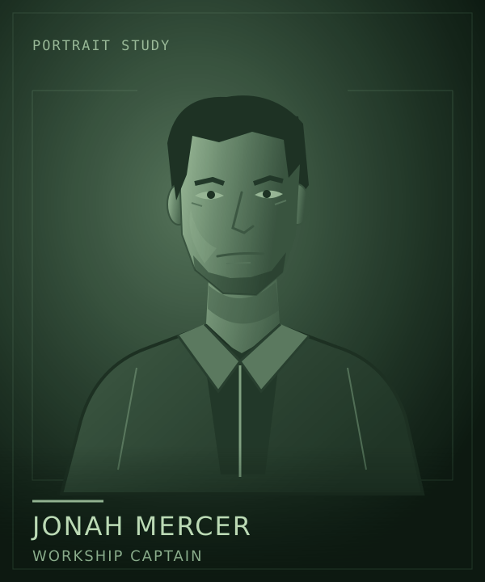

Lore / Jonah Mercer
Jonah Mercer
 | |
| Portrait concept. Appearance and clothing are not established designs. | |
| Role | Workship captain |
|---|---|
| Employer | Clearwell Waterworks |
| Intention | Return to Earth after the posting |
{kind=link}
Jonah Mercer captains Kaveri, a workship for Clearwell Waterworks. An established employee rather than a newcomer, Jonah knows the work and the people who depend on a competent captain. The ship and the company belong to neither the captain nor the crew.
Jonah is restrained, not uncertain. Responsibility begins with the people aboard: a promise made on their behalf also commits their time, safety, and future.
A posting with an end
Earth remains a credible next chapter. Jonah expects to finish the posting and return to a settled life there. Saturn is not somewhere the captain has arrived hoping to found a company or lead a movement.
That intention separates Jonah from crewmates who already call Saturn home. It does not make the work temporary in importance. The crew still has to live with the decisions made today.
Trust aboard
Chief engineer Leila Haddad is Jonah's closest professional counterpart. Trust in each other's competence comes before agreement about what their lives should become. Leila has made a home where Jonah still sees a posting.
Pilot Tomas Vega also wants to return to Earth. Work operations lead Rina Okafor brings the needs of station residents into crew decisions, while systems technician Samir Bell pays attention to what the records actually support.
They are five working people with different reasons to be aboard, not a captain and four interchangeable hands.
A shore counterpart
Elena Ward, Clearwell's co-founder and Baikal's resident manager, is Jonah's shore contact. Elena handles the station's needs and company commitments, treating Jonah as a trusted professional rather than an apprentice.